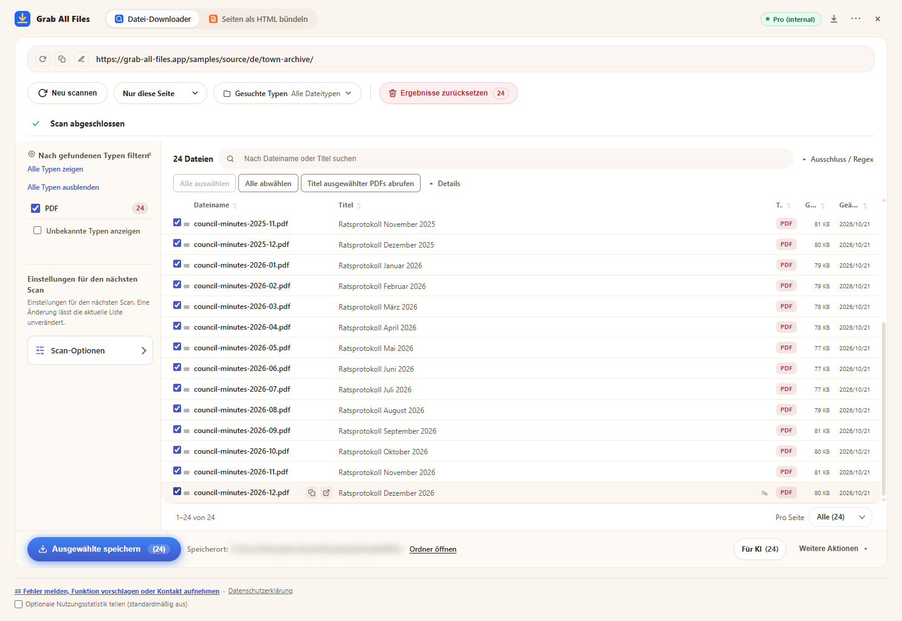

Echte Ausgabe von Grab All Files
24 PDFs in einem Durchgang heruntergeladen (Pro)
Das Archiv der Ratsprotokolle einer fiktiven Stadt (ein Protokoll pro Monat von Januar 2025 bis Dezember 2026: 24 PDFs) wurde durchsucht, alle PDFs wurden ausgewählt und in einem Durchgang gespeichert. Kostenlos speichert bis zu 10 Dateien pro Download, das wären hier drei Durchgänge; Pro hat keine Grenze pro Download. Die Dateinamen vergab die Erweiterung anhand des Titels jedes PDFs.
Ausgabedateien
- Ratsprotokoll Januar 2025.pdf
- Ratsprotokoll Februar 2025.pdf
- Ratsprotokoll März 2025.pdf
- Ratsprotokoll April 2025.pdf
- Ratsprotokoll Mai 2025.pdf
- Ratsprotokoll Juni 2025.pdf
- Ratsprotokoll Juli 2025.pdf
- Ratsprotokoll August 2025.pdf
- Ratsprotokoll September 2025.pdf
- Ratsprotokoll Oktober 2025.pdf
- Ratsprotokoll November 2025.pdf
- Ratsprotokoll Dezember 2025.pdf
- Ratsprotokoll Januar 2026.pdf
- Ratsprotokoll Februar 2026.pdf
- Ratsprotokoll März 2026.pdf
- Ratsprotokoll April 2026.pdf
- Ratsprotokoll Mai 2026.pdf
- Ratsprotokoll Juni 2026.pdf
- Ratsprotokoll Juli 2026.pdf
- Ratsprotokoll August 2026.pdf
- Ratsprotokoll September 2026.pdf
- Ratsprotokoll Oktober 2026.pdf
- Ratsprotokoll November 2026.pdf
- Ratsprotokoll Dezember 2026.pdf
Die Erweiterung mit 24 ausgewählten PDFs, kurz vor dem Speichern (der Speicherort ist unkenntlich gemacht)

So ist sie entstanden
- Quellseite
- /samples/source/de/town-archive/
- Erweiterung
- Grab All Files 5.8.31
- Browser
- Chrome 156.0.8078.48 (Windows 11)
- Tarif
- Pro
- Erstellt am
- 2026-10-28
- Einstellungen
- Linktiefe: Nur diese Seite
- Dateityp: nur PDF
- Ausgewählte Dateien: 24
- Gespeichert in: Download-Ordner des Browsers (Ordner GrabAllFiles)